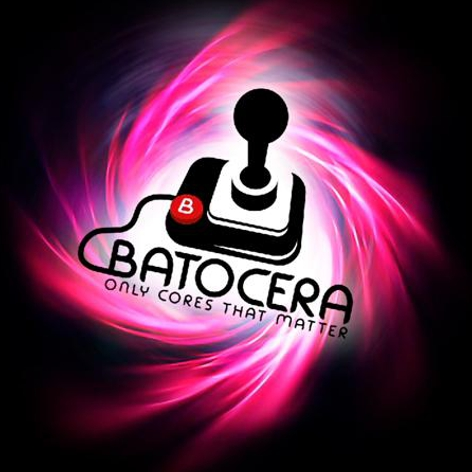

Batocera Linux: Consolas, plataformas y Emuladores
“Batocera.linux es una distribución de juegos retro de código abierto y completamente gratuita que se puede copiar en una memoria USB o en una tarjeta SD con el objetivo de convertir cualquier ordenador/nanoordenador en una consola de juegos durante una partida o de forma permanente. Batocera.linux no requiere ninguna modificación en tu ordenador. Ten en cuenta que debes ser el dueño de los juegos que juegas para cumplir con la ley.”
Entre sus principales características destacan las siguientes:
Excelente apariencia visual: Posee hermosos temas y efectos visuales. Potente conjunto de apps gaming: Incluye los mejores emuladores de juegos y kernels para jugar. Totalmente de código abierto: Es 100% de código abierto, por lo que, todos su contenido está disponible libremente. Lista para usar y jugar: No requiere de mayores ni complejas configuraciones. Básicamente, viene lista para ser descargada, grabada, ejecutada y jugar. Versión actual Además, «Batocera» Linux actualmente va por su versión 31 del 18/06/21, que incluye entre otros cambios, los siguientes que han sido añadidos: Xemu, Emulador de Xbox para x86_64 Future pinball (x86_64) Soporte para flatpak (x86_64) Emulador de Watara Supervision App libretro-melonDS en Odroid Go Advance / Odroid Go Super Mayores opciones de overclocking para el rpi4 Biseles independientes de Mame Shaders libretro para Vulkan y correciones de LR-Mupen64plus en OpenGL. Soporte para el adaptador de Gamecube Configuración por defecto de las opciones de los emuladores independientes en idioma español (Es)